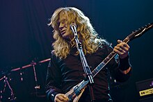
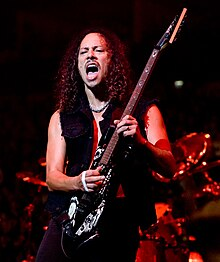

 Na natáčení prvního alba Kill 'Em All jela kapela do Rochesteru v New Yorku, kde se Hetfield, Ulrich a Burton rozhodli z kapely vyloučit Mustaina pro jeho problémy s alkoholem, drogami a násilnickým chováním, během sešlosti 11. dubna 1983. Mustaina nahradil Kirk Hammett z kapely Exodus, který se stal členem Metallicy ještě ten samý den. První vystoupení s Hammetem bylo 16. dubna 1983 v nočním klubu The Showplace v Doveru v New Jersey. Album se nejprve mělo jmenovat Metal Up Your Ass, ale kvůli sporu mezi vydavateli a distributory, kteří odmítali vydat album s tímhle názvem, bylo album přejmenováno na Kill 'Em All a album tak vyšlo 27. května 1983 a je považováno za klasiku žánru. Album bylo vydáno firmou Megaforce Records v USA a firmou Music for Nations v Evropě a umístilo se na 120 místě žebříčku Billboard 200 v roce 1988 a ačkoliv album nebylo důležitým finančním úspěchem, pomohlo Metallice získat základnu posluchačů v undergroundové metalové scéně. Metallica po vydání svého prvního alba vyjela na své první turné (s britskou kapelou Raven), aby podpořila vydání alba. V únoru 1984 předskakovala skupině Venom na turné Seven Dates of Hell, kde skupina hrála před sedmi tisíci lidmi na Aardschokovém Festivalu ve městě Zwolle v Nizozemsku.
Mustaine, který po odchodu založil skupinu Megadeth, často v rozhovorech vyjadřoval svoji nelibost vůči Hammetovi. Také říkal, že mu Hammet "ukradl job". Mustaine byl "nasrán", protože věří, že se Hammet stal známý díky hraním skladeb, které napsal on. V roce 1985 v rozhovoru s Metal Force, Mustaine o Hammetovi řekl: „Je to opravdu legrační, jak Kirk Hammet ukradl všechna má sóla, která jsem nahrál v No Life 'til Leather a vy jste ho ještě zvolili nejlepším kytaristou časopisu.“ Na první album skupiny Megadeth Killing Is My Business… and Business Is Good! z roku 1985 Mustaine zařadil skladbu „Mechanix“, kterou Metallica upravila a přejmenovala na „The Four Horsemen“ (z alba Kill 'Em All). Mustaine řekl, že to udělal proto, aby naštval Metallicu. Ta zase oponovala a označila Mustaina za alkoholika a za muzikanta, který ani neumí hrát na kytaru.
14. ledna 1984, po jednom z koncertů, někdo vykradl náklaďák s celou hudební výbavou, členům skupiny zůstaly jen ty kytary, které měli s sebou v hotelu. Z tohoto zážitku se zrodila první balada Metallicy „Fade to Black“. Píseň má velice pesimistický text: „Ztratil jsem chuť do života… nic mi nezůstalo, potřebuji konec, abych se osvobodil“. Následně se Metallica vydala na evropské turné.
 Metallica nahrála druhé studiové album, Ride the Lightning, ve studiu Sweet Silence v Kodani v Dánsku. Producentem tentokrát byl Flemming Rasmussen. Album bylo vydáno v srpnu 1984 a umístilo se na stém místě v Billboard 200. Zvláštní je, že v tiskárně ve Francii omylem vytiskli zelené obaly k albu, které se později staly vysoce ceněnou sběratelskou raritou. Ostatní skladby z alba jsou „Fight Fire With Fire“ (tématem písně je nukleární válka), „For Whom the Bell Tolls“, „Fade to Black“, „Trapped Under Ice“, „Escape“ (pokus kapely o rádiový hit), „Creeping Death“ (skladba, která vypráví biblický příběh o židovském odchodu z otroctví v Egyptě, zaměřující se především na mor, jenž postihl Egypťany) a instrumentální skladba „The Call of Ktulu“. Mustaine je označen jako spoluautor skladeb „Ride the Lightning“ a „The Call of Ktulu“.
Poté, co ředitel vydavatelství Elektra Records Michael Alago a spoluzakladatel firmy Q-Prime Management Cliff Burnstein viděli koncert Metallicy, nabídli jí smlouvu, která byla pro skupinu výhodná a tak ji 12. září podepsala. Úspěch Metallicy byl pak zvýrazněn tím, že British label Music for Nations vydal limitovanou edici singlu Creeping Death, kterého se prodalo 40 000 kusů. Dvě ze tří skladeb se objevily na znovuvydaném albu Kill 'Em All (vydaném v roce 1989 Elektrou, obsahující předělávky skladeb „Am I Evil?“ od Diamond Head a „Blitzkrieg“ od skupiny Blitzkrieg). Metallica poté vyjela na první velké evropské turné se skupinou Tank s průměrnou návštěvou 1300 lidí. Po návratu do USA skupina absolvovala turné se skupinami W.A.S.P. a Armored Saint.
17. srpna 1984 skupina hrála na festivalu Monsters of Rock v Donington Parku vedle kapel jako Ratt a Bon Jovi před 70 000 lidmi. James Hetfield na koncertě přednesl slavnou řeč na téma Metallica a jiné kapely tohoto festivalu: „Jestli jste přišli, abyste viděli barevný hadry ze spandexu a make-up, nebo jiný sračky a čekáte na slova rock'n'roll, baby v každý písničce, tak my nejsme vaší kapelou“. Po vystoupení na festivalu se situace Metallicy v Anglii zlepšila a prodej desek se zdvojnásobil. 31. srpna skupina hrála před obecenstvem 60 tisíc posluchačů na festivalu Days on the Green v Oaklandu v Kalifornii.